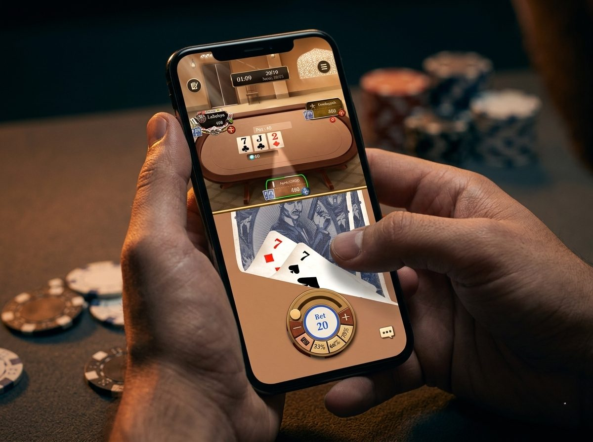

A Sit & Go (SNG) is a single-table poker tournament that starts as soon as all seats fill, typically 6 or 9 players, with no scheduled start time. Players receive equal chip stacks, blinds increase at fixed intervals, and the top 2-3 finishers split the prize pool — making SNGs faster and more predictable than multi-table tournaments.
What Is a Sit & Go?
A Sit & Go is a single-table poker tournament (typically 3 to 9 players) that begins as soon as every seat is filled. Everyone starts with the same stack, blinds increase on a timer, and the last player standing takes the biggest share of the prize pool.
SNG vs. Multi-Table Tournaments (MTT):
| Sit & Go | MTT | |
|---|---|---|
| Players | 3–9 (single table) | 100+ (multi-table) |
| Start time | When seats fill | Scheduled |
| Duration | 20–45 min | 2–8 hours |
| Skill focus | Table reads, push/fold | Endurance, stack management |
Think of it this way: MTTs are marathons. Sit & Go is a sprint with a poker brain.
Sit & Go Strategy: The 3 Phases
Every SNG plays out in three distinct phases. Knowing when to shift gears is what separates breakeven players from profitable ones.
Phase 1: Early Game (Full Table, Low Blinds)
Play tight. The blinds are small relative to stacks, so there's no reason to gamble. Let the loose players knock each other out.
- Stick to premium hands: high pocket pairs, AK, AQ
- Avoid marginal spots — you don't need to build a big stack yet
- Observe your opponents. Who's aggressive? Who folds too much? This information pays off later.
Phase 2: Middle Game (Half the Table Left, Rising Blinds)
Start applying pressure. Blinds are eating into shorter stacks, and players tighten up to survive into the money. This is where you steal.
- Open wider from late position
- Attack players who are clearly waiting for the money
- Re-steal against loose openers if your stack allows it
Phase 3: Bubble & Heads-Up (Final 2–3 Players, High Blinds)
This is where SNGs are won or lost. The bubble (one spot before the money) creates massive pressure.
- Short stack? Know your push/fold ranges. At 10 big blinds or less, it's shove-or-fold — no limping, no small raises.
- Big stack? Pressure the medium stacks. They can't afford to call without a premium hand.
- Heads-up? Aggression wins. Raise nearly every button, and don't let your opponent see free flops.
Common SNG Mistakes
- Playing too many hands early. There's no prize for having the chip lead at level 2. Survival matters more than accumulation in Phase 1.
- Not adjusting to stack sizes. A 15 big blind stack plays completely differently from a 50 big blind stack. If you're short, stop seeing flops — start shoving.
- Overvaluing ICM late. Yes, pay jumps matter. But playing too passively on the bubble lets aggressive players steamroll you. Pick your spots to fight back.
- Ignoring position. In a short-handed SNG, position is everything. The button is the most profitable seat at the table — use it.
Where to Play Sit & Go in 2026

Most poker platforms offer SNGs, but the experience varies. Here's what actually matters when choosing where to play:
- Speed: Can you jump in immediately, or are you waiting 20 minutes for a table to fill?
- Player pool: Are you playing against the same regulars, or is there real variety?
- The feel: Does it feel like a poker table, or a spreadsheet?
Pokerrrr 2 runs Sit & Go in two modes:
- Public games — open tables that fill fast, matching you with players worldwide. No waiting around.
- Private games — set up your own SNG with friends, customize blinds and structure, and run it your way.
One thing that's hard to describe until you try it: the peek-card feature. You drag the cards from the bottom up to peek — the way you would at a real table, slowly revealing what you're holding. It sounds small, but it completely changes the tension of every hand. Especially in a SNG where every decision counts.
Quick Reference: SNG Cheat Sheet
| Stack Size (Big Blinds) | Strategy |
|---|---|
| 30+ BB | Play standard poker. See flops in position, value bet strong hands. |
| 15–30 BB | Tighten opening range, increase 3-bet frequency, avoid flat-calling. |
| 10–15 BB | Push/fold mode approaching. Raise-fold is usually worse than shoving. |
| Under 10 BB | Shove or fold. No limping. No min-raising. Pick your spot and go. |
Frequently Asked Questions About Sit & Go Poker
Q1: How long does a Sit & Go tournament last?
A: A 6-player Sit & Go typically lasts 30-60 minutes, while a
9-player SNG runs 60-90 minutes depending on blind structure.
Turbo formats with faster blind levels can finish in 20-30 minutes.
Once registration fills and the tournament starts, blinds increase
every 5-10 minutes until one player has all the chips.
Q2: How many players do you need for a Sit & Go?
A: Standard Sit & Go formats require 6 or 9 players to start.
Heads-up SNGs require just 2 players, while smaller "Spin & Go"
variants typically use 3 players. The tournament begins automatically
once the required number of seats fill, with no scheduled start time.
Q3: What's the difference between a Sit & Go and a regular tournament?
A: A Sit & Go is a single-table tournament that starts when seats
fill, while regular tournaments (MTTs) have scheduled start times
and span multiple tables. SNGs are faster (30-90 minutes vs 3+ hours)
and more predictable in length. SNG strategy focuses on push/fold
ranges and ICM, while MTT strategy involves multi-stage adjustments.
Q4: What's the best Sit & Go strategy for beginners?
A: Beginners should play tight in the early stages (full table,
low blinds), open up gradually as players bust, and master push/fold
strategy for the bubble and heads-up phases. Focus on premium hands
in early position, steal blinds aggressively when stacks shorten,
and learn ICM basics — the late-game payout structure rewards
survival over chip accumulation.
About Pokerrrr 2
Pokerrrr 2 is a mobile poker app available on iOS and Android that supports two ways to play: host private poker games with friends, or join public tables with players from around the world. Supported formats include Texas Hold'em, Omaha (PLO), Short Deck, Sit & Go, Double Board Hold'em, and Open Face Chinese (OFC). Games are play-money only and no real-money gambling is supported within the app.
Start Playing
Sit & Go rewards a specific kind of player: someone who can read the table fast, adjust to changing dynamics, and make big decisions under pressure.
If that sounds like your game — grab a seat.
👉 Download the Pokerrrr 2 app and start hosting private poker games with your friends anytime, anywhere.